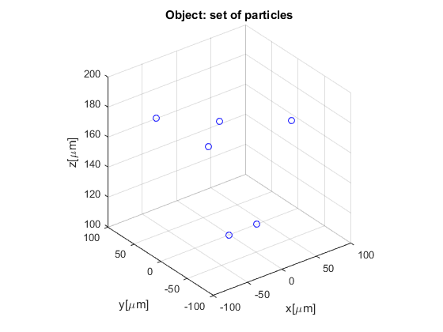
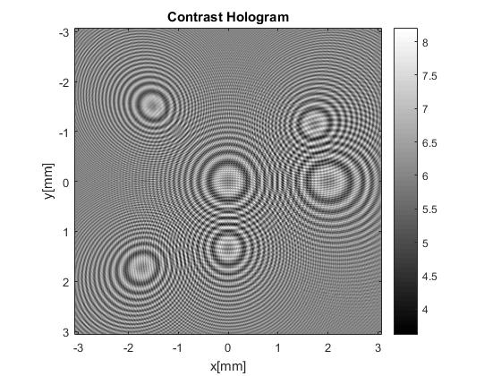

Contents
%%%%%%%%%%%%%%%%%%%%%%%%%%%%%%%%%%%%%%%%%%%%%%%%%%%%%%%%%%%%%%%%%%%%%%%%% % % This function create an hologram from a set of points in the space % defined by xp, yp and zsp, which are the coordinates of the point in x,y % and z coordinates. % %%%%%%%%%%%%%%%%%%%%%%%%%%%%%%%%%%%%%%%%%%%%%%%%%%%%%%%%%%%%%%%%%%%%%%%%% clear,clc,close all
Parameters definition
M = 1024; % Array size zp = 5e-3; % Source-Hologram distance lambda = 405e-9; % Illumination wavelength L2 = 6e-6*M; % Hologram pixel size k = 2*pi/lambda; % wavenumber Interpolar = 0; % Whether or not interpolate in propagation function Ih = zeros(M); % Hologram matrix initialization xp = 1e-6*[40,0,0,-60,60,-60]; % x coordinates for the point yp = 1e-6*[0,0,40,60,-40,-60]; % y coordinates for the point zsp = 1e-6*[100,100,150,175,175,200]; % z coordinates for the point objSize = 1e-6*ones(1,length(xp))*0.5; % Point size NP = size(zsp,2);
Propagation process
Every images is generate and propagate, then the final hologram is build as the sum of the indivudual holograms of each point
for i = 1:NP zs = zsp(i); % Source object distance L = (L2*zs)/zp; % Object size dx = L/M; % Object pixel size x = -L/2:dx:L/2-dx; [X,Y] = meshgrid(x,x); % Object plane coordinates system % Object creation obj = ones(length(x),length(x)); obj((X-xp(i)).^2+(Y-yp(i)).^2<=objSize(i)^2) = 0; SourcePhase = exp((1i*k*sqrt(X.^2+Y.^2+zs.^2)))./sqrt(X.^2+Y.^2+zs.^2); % Spherical wavefront phase A0 = obj.*SourcePhase; % Object field As = SourcePhase; % Spherical wave phase [A, X2, Y2] = propF_Mod(A0, L, zp-zs, L2, lambda,Interpolar); %% Object field propagation [A2s, X2s, Y2s] = propF_Mod(As, L, zp-zs, L2, lambda,Interpolar); %% Source field propagation I = A.*conj(A); % Object propagated intesity Is = A2s.*conj(A2s); % Source propagated intensity I = I-Is; % Contrast Hologram I2 = I/max(I(:)); % Image normalization I2 = imcomplement(I2); % For display Ih = Ih+I2; % Sum of diferent holograms end
Interpolation of the data.
The interpolation should be done for each hologram according to its object hologram distace, however this takes a lot of time. But it is possible to assume that particles are very close and if we interpolate for a single position it should not introduce many negative effects
[Ih] = interpolarPropFMod(Ih, X2, Y2, zp); figure, plot3(xp*1e6,yp*1e6,zsp*1e6,'ob'),axis square, xlabel('x[\mum]'), ylabel('y[\mum]'), zlabel('z[\mum]'),grid on, title('Object: set of particles') figure,imagesc(X2(1,:)*1e3,X2(1,:)*1e3,abs(Ih)),colorbar, colormap gray, title('Contrast Hologram'), xlabel('x[mm]'), ylabel('y[mm]'), axis square; 